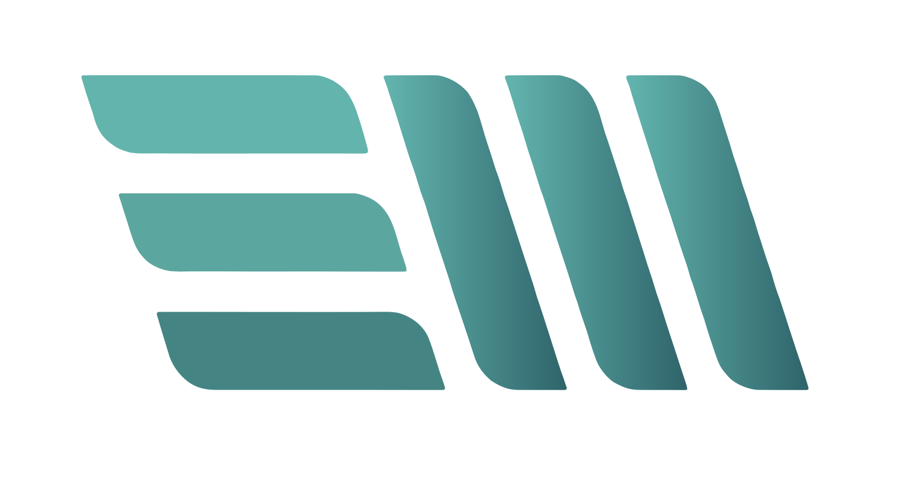
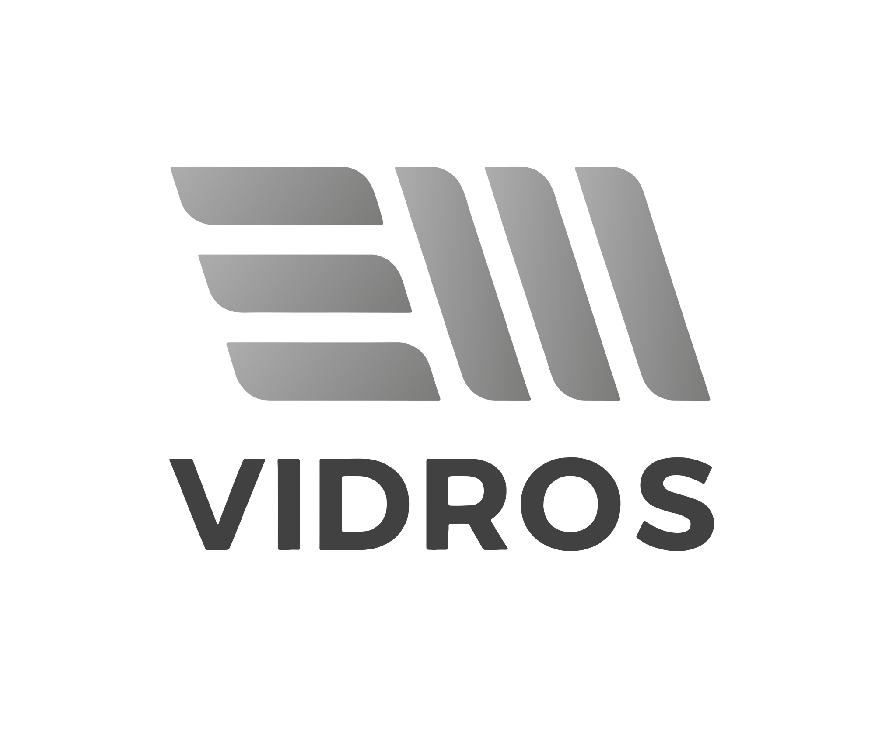

Princípio 01
Clareza antes de ornamento.
A marca segue a lógica do material: o que comunica é o conteúdo, não o enfeite em volta. Se um elemento não carrega informação, ele sai.
Este manual cobre a camada visual da marca. Escrita, emoji, pilares de conteúdo, calendário e vídeo vivem no brandbook completo — este documento é o recorte que o designer precisa ter aberto ao lado do arquivo.
Indústria de beneficiamento de vidro fundada em 2014. Fábrica na Raposa (MA), unidade em Imperatriz (MA), seis filiais no Maranhão, Pará e Piauí. Certificação INMETRO e Instituto Falcão Bauer para temperado em 6, 8 e 10 mm.
Clareza antes de ornamento.
A marca segue a lógica do material: o que comunica é o conteúdo, não o enfeite em volta. Se um elemento não carrega informação, ele sai.
Matéria antes de brilho.
Grão, textura e superfície fosca no lugar de gloss, reflexo falso e 3D lustroso. O gloss sugere renderização; a textura sugere fábrica. A EM Vidros tem fábrica.
Prova antes de promessa.
Obra entregue, capacidade instalada, gente trabalhando, certificado no papel. Certificado INMETRO 6, 8 e 10 mm vale mais que qualidade incomparável.
| Primário · B2B | Vidraceiro, serralheiro, marmorista, construtora, arquiteto, projetista. Conhece o produto melhor que o vendedor médio. Não responde a entusiasmo, responde a competência. |
| Secundário · B2C | Consumidor final decidindo box, janela, guarda-corpo, espelho. Precisa de tradução, não de simplificação. |
Toda peça precisa saber para qual dos dois fala. Peça que tenta falar para os dois ao mesmo tempo não fala para ninguém.
Imagine EM Vidro
Singular — Vidro, não Vidros. É o material, não a empresa. EM em caixa alta preserva o duplo sentido com a marca.
Hoje o nome circula em quatro grafias diferentes e a tagline em três. Isso não é variação de estilo — é a marca aparecendo como quatro marcas. As formas abaixo são trava.
EM Vidros
EM em caixa alta porque é sigla. Vidros capitalizado como nome próprio.
| Em Vidros | LinkedIn, textos institucionais |
| EM VIDROS | bio do Instagram, artes |
| EmVidros | — |
| Em vidros | texto do LinkedIn |
Exceção única: dentro do logotipo, onde VIDROS é desenho, não texto.
Imagine EM Vidro
| Imagine EM vidro | |
| imagine em vidro | artes |
| Imagine EM Vidros | — |
Existem versões do logotipo assinadas Raposa e Imperatriz.
| Sinalização física da própria unidade |
| Comunicação local: horário, evento, vaga |
| Documento operacional daquela planta |
| Qualquer peça de rede social |
| Institucional, produto, campanha |
| Alcance regional ou nacional |
Nas redes sociais só entra o logotipo mãe. A conta é uma só; sinalizar unidade dentro da arte fragmenta a marca. Unidade se informa no texto, não na assinatura.
EM Hub tem logotipo próprio e está fora deste sistema.
Símbolo (as barras escalonadas que formam EM) e wordmark (VIDROS). As medidas abaixo saíram do arquivo oficial, normalizadas para largura 600.
| Símbolo — 361 × 157 | |
| Espaço vertical — 0,63 × caixa alta | |
| Wordmark — 364 × 62 |
Guias posicionadas por medição do emvidros-oficial.svg, não por estimativa.
| Largura | Altura | Proporção | |
|---|---|---|---|
| Símbolo | 361 | 157 | 2,299 |
| Wordmark | 364 | 62 | 5,871 |
O wordmark é justificado à largura exata do símbolo. A diferença medida é de 0,8% — construção, não acaso. Símbolo e wordmark partilham a mesma margem esquerda e a mesma margem direita.
Espaço vertical entre símbolo e wordmark = 0,63 × altura da caixa alta do wordmark.
Ao recriar o logotipo em qualquer ferramenta, estas duas relações têm de ser reproduzidas. Se o wordmark não fechar na largura do símbolo, o tracking está errado.
A área de proteção é a única distância que não se negocia por falta de espaço. Se não cabe com ela, a peça está errada — não o logotipo.
Área livre mínima em todos os lados = altura da caixa alta do wordmark (a altura da letra V).
Nada entra nessa faixa: nem texto, nem foto, nem borda, nem outro logotipo.
| Meio | Largura mínima |
|---|---|
| Digital | 120 px |
| Impresso | 25 mm |
| Só o símbolo | 32 px / 8 mm |
Abaixo de 120 px de largura, usar só o símbolo. O wordmark fecha e vira mancha.

Completo · símbolo isolado
Feed e story: canto inferior direito, discreto, na versão que garante contraste.
Largura entre 12% e 16% da largura da peça.
Nunca centralizado, nunca no topo, nunca com peso maior que o título.
Não existe "escolher a que fica melhor". Cada variante tem uma condição de fundo e um uso; fora dela, é a variante errada.
emvidros-oficial.svg
Padrão. Fundo claro, de branco a #F0EFEA.
emvidros-branca.svg
Fundo escuro, foto escura, vídeo.

emvidros-cinza.svg
Monocromático, documento, gravação.
em-simbolo.svg
Avatar, favicon, marca d'água, abaixo de 120 px.
emvidros-raposa.svg e emvidros-imperatriz.svg existem apenas para sinalização física e documento operacional daquela planta. Nunca em rede social, institucional, produto ou campanha.
Qualquer uma destas transforma o logotipo em outra coisa. Não há caso especial, campanha sazonal ou pedido de cliente que abra exceção.
01 Alterar a proporção. Nunca esticar, comprimir ou distorcer.
06 Aplicar sobre foto de baixo contraste sem a versão branca ou sem véu.
02 Recolorir o gradiente ou substituí-lo por cor chapada não prevista.
07 Aplicar textura ou grão sobre o logotipo. O grão fica na camada de fundo, sempre atrás.
03 Aplicar sombra, contorno, bisel, brilho ou qualquer efeito 3D.
08 Redigitar VIDROS em outra fonte para "consertar" o logotipo.
04 Rotacionar.
09 Usar como elemento decorativo, repetido em padrão ou cortado pela borda.
05 Reordenar, separar ou reespaçar símbolo e wordmark.
10 Colocar dentro de forma geométrica — círculo, selo, badge — que não seja o avatar oficial.
Regra 07 é a que mais se quebra sem perceber, porque a textura é obrigatória em toda peça (capítulo 12). A ordem de camadas é sempre a mesma: fundo → textura → conteúdo → logotipo. O logotipo é a última camada e entra limpo.
Quando a peça precisa de um elemento gráfico grande, ele sai da matéria — painel de vidro jateado, filete, campo de cor —, nunca do símbolo ampliado. A capa deste manual é o exemplo: o bloco à direita é a textura JATEADO, não a marca em escala. Derivar do material é permitido; repetir a marca como padrão não é.
Os antigos #00A99D e #32A999 estão descontinuados. Nenhuma peça nova pode usá-los.
#63B5AF → #2F646A, exclusivo do símbolo. Não aplicar em fundo, texto ou forma.
| #FFFFFF Branco |
#F0EFEA Off-White |
#E4E1D8 Areia |
#D8D5CE Linha |
#8A8A8A Cinza Médio |
#B4552E Atenção |
#4A7C59 Sucesso |
Off-White é o fundo padrão do sistema — base de toda peça editorial. Atenção só em comunicado de feriado ou alteração de funcionamento, nunca decorativo.
Teal é accent, não fundo. Peça majoritariamente teal é exceção institucional — como a capa deste manual — e não padrão de feed.
Off-white, branco e areia. O respiro é conteúdo.
Texto corrido, o peso da leitura.
Título, filete, palavra destacada.
| Combinação | Razão | Situação |
|---|---|---|
| #414141 sobre #F0EFEA | 8,9:1 | Qualquer tamanho |
| #2F646A sobre #F0EFEA | 5,6:1 | Qualquer tamanho |
| #FFFFFF sobre #2F646A | 6,1:1 | Qualquer tamanho |
| #8A8A8A sobre #F0EFEA | 3,3:1 | Só a partir de 18 pt / 24 px |
| #63B5AF sobre #F0EFEA | 2,1:1 | Reprovado para texto |
× Reprovado. 2,1:1 — some em tela de celular sob luz do dia.
— Aprovado. 5,6:1 — o accent volta como filete, não como cor de letra.
O papel do Teal Claro é marcar: filete sob título, ponto final de frase, contorno de ícone, faixa de destaque atrás de forma cheia. Em todos esses casos ele não precisa ser lido.
Poppins não foi escolhida por gosto. Medição de proporção de tinta letra a letra contra o wordmark VIDROS deu erro médio de 6,2% no peso 600 — contra 29 a 34% de Montserrat. É a família que casa com o logotipo.
Corpo, dado técnico, rótulo, número, legenda, CTA, interface. Todo post técnico e de produto, inclusive o título.
Pesos em uso: 300 · 400 · 500 · 600. Nunca mais de dois pesos na mesma peça.
Somente headline de peça institucional, data comemorativa e campanha.
É o registro que já funciona no feed. Está no Canva e no Google Fonts, com acentuação portuguesa completa.
Playfair Display nunca aparece em post técnico, de produto ou de dado. Se a peça informa espessura, norma, medida, preço, prazo ou especificação, ela é inteira em Poppins.
Playfair é para quando a mensagem é sobre pessoas, datas e a empresa — não sobre o material.
Nunca as duas na mesma linha.
Nunca Playfair em corpo de texto.
Nunca Playfair abaixo de 32 px.
Este manual demonstra a própria regra: Playfair só na capa e na tagline. Todo título de capítulo, tabela e medida está em Poppins.
Story 1080 × 1920: multiplicar por 1,15 e respeitar as zonas seguras do capítulo 11.
| Nível | Fonte | Tam. | Peso | Entrel. | Track. |
|---|---|---|---|---|---|
| Display | Playfair Display | 96–120 px | 500 | 1,05 | −1% |
| Título | Poppins | 64–84 px | 600 | 1,10 | −2% |
| Subtítulo | Poppins | 38–46 px | 500 | 1,30 | 0 |
| Corpo | Poppins | 28–32 px | 400 | 1,65 | 0 |
| Rótulo | Poppins | 20–24 px | 600 | 1,20 | +8% |
| Legenda | Poppins | 18–20 px | 400 | 1,40 | 0 |
Poppins tem altura de x alta, o que cansa em blocos longos. Duas compensações não são opcionais:
01 Entrelinha nunca abaixo de 1,65 no corpo.
02 Máximo de 5 linhas de corpo por peça. Passou disso, o texto vai para a legenda do post.
| Certo | Errado |
|---|---|
| 10 mm | 10mm |
| 6, 8 e 10 mm | 06, 08 e 10mm |
| R$ 1.200,00 | R$1200,00 |
| 2 m² | 2m2 |
| (98) 3131-4000 | 98 3131 4000 |
| 0800 150 0103 | 0800-150-0103 |
Feed é 1080 × 1350, nunca 1080 × 1080. Story e Reel são 1080 × 1920, com as zonas cobertas pela interface do Instagram fora do jogo.
Margem de 80 px nos quatro lados. Nada de conteúdo fora dessa caixa.
Grade de 6 colunas, medianiz de 32 px. Texto ocupa 4 ou 6 colunas — nunca 5 (assimetria sem intenção).
Lateral 80 px. Superior 250 px e inferior 320 px — as faixas em laranja são cobertas pela interface do app.
Capa de Reel: 1080 × 1920 com recorte de feed legível em 1080 × 1350.
Um foco por peça. Uma imagem principal ou um bloco de texto principal. Nunca os dois disputando.
Alinhamento único. A peça inteira alinhada à esquerda ou inteira centralizada. Não misturar.
Respiro é conteúdo. Se a peça parece vazia, provavelmente está certa. Se parece cheia, está errada.
Cantos: raio de 4 a 8 px em contêineres. Nunca acima de 12 px. Nunca pílula.
Sem sombra. Separação por cor de fundo ou filete de 1 px em #D8D5CE.
Máximo de 3 blocos de texto por peça — display ou título, subtítulo, e rótulo ou crédito.
A regra do raio se aplica em cascata: contêiner externo de 8 px com respiro de 4 px pede contêiner interno de 4 px. Raio igual em elemento aninhado é o erro que faz a peça parecer desalinhada sem que ninguém saiba dizer por quê.
Textura não é enfeite neste sistema: é o que separa peça de indústria de template genérico. Toda peça leva textura. Peça sem textura está incompleta.
emv-textura-grao.png
| Mesclagem | Overlay |
| Opacidade | 6–10% |
| Escala | 100%, sem esticar |
Ruído de filme fino e isotrópico, sobre fundo chapado, para tirar a chapa digital. Toda peça.
emv-textura-jateado.png
| Mesclagem | Soft Light |
| Opacidade | 12–18% |
| Escala | 100–140% |
Imita vidro fosco e acidato. É a textura mais ligada ao produto — faixa, card, destaque.
emv-textura-papel.png
| Mesclagem | Multiply |
| Opacidade | 8–14% |
| Escala | 100% |
Fibra com manchas largas, para o registro editorial. Fundo off-white de peça com Playfair.
01 Nunca duas texturas na mesma peça. Uma escolha por arte.
02 Nunca sobre o logotipo. A textura fica na camada de fundo; a marca entra por cima, limpa.
03 Nunca sobre foto de produto. A foto tem a própria matéria.
04 Nunca acima de 18%. Passou disso vira sujeira, não matéria.
05 Nunca esticada em uma direção só. Escalar proporcional ou repetir.
06 Em vídeo, o grão vai na correção de cor, não como camada sobreposta.
feTurbulence type="fractalNoise"
baseFrequency="0.85" numOctaves="3"
+ feColorMatrix saturate 0
Em ::after, com opacity:.08 e Overlay.
Em PDF, não use blend — ele quebra a camada de texto do arquivo inteiro, e as palavras passam a ser extraídas letra a letra. Em documento, a textura entra como imagem com opacidade.
Vidro é reflexo, transparência e refração — exatamente onde a geração por IA falha de um jeito que qualquer profissional do setor percebe em dois segundos. Um vidraceiro que vê um reflexo impossível conclui, corretamente, que a empresa não fotografou a própria obra.
| Permitido | Proibido |
|---|---|
| Fundo abstrato e textura | Representar produto da EM Vidros |
| Cenário conceitual e metafórico | Representar obra entregue |
| Elemento gráfico não-fotográfico | Representar a fábrica ou o maquinário |
| Ilustração de data comemorativa sem produto | Representar pessoas da empresa |
| — | Qualquer imagem lida como registro real |
Se alguém pode olhar a imagem e acreditar que aquilo é uma obra, um produto ou uma pessoa da EM Vidros, ela precisa ser foto real.
Luz. Natural difusa, de lado, perto de abertura grande. Nunca sol direto. Em fábrica, desligar o flash e apoiar em superfície — a luz industrial já basta. Nunca luz frontal direta: mata o vidro, que só se vê pelo que reflete.
Ângulo. Ligeiramente fora do eixo, 15° a 30°, para o vidro mostrar reflexo e profundidade. De frente, vidro transparente desaparece.
Fundo. Limpo e distante. O que estiver atrás do vidro será visto através dele. Antes de fotografar, olhar o fundo — não a peça.
Enquadramento. Vertical, 4:5 ou 9:16. Sobra de espaço nas bordas para reenquadrar depois.
Correção de cor fiel — o cliente compara com o que recebeu. Nunca saturar o teal do vidro para casar com a marca. Nunca preto esmagado: vidro vive nos meios-tons. Nunca vinheta pesada, HDR ou filtro de aplicativo.
Três gabaritos com todas as regras deste manual aplicadas ao mesmo tempo: margem, grade, escala, proporção de cor, textura e posição do logotipo.
Poppins inteiro. Grão a 8%.
Sem Playfair — é peça de dado.
Playfair na headline. Papel a 12%.
Data e empresa — não material.
Fundo teal é exceção
institucional, não padrão.
A fronteira tipográfica é visível. O gabarito técnico e o institucional têm a mesma grade, a mesma margem e a mesma posição de logotipo. A única diferença é a família da headline — e ela muda o registro inteiro sem mudar o sistema.
O teal aparece pouco. Nos dois gabaritos de feed ele está no rótulo, no filete e na headline institucional. Somados, ficam perto dos 10% da regra 70 / 20 / 10.
O logotipo nunca compete. 14% da largura, canto inferior direito, dentro da margem de 80 px. Ele assina; não anuncia.
O story respeita as zonas mortas. Todo o conteúdo vive entre 250 px do topo e 320 px da base — inclusive a assinatura, que sobe para não ficar sob a barra de resposta.
Gabaritos editáveis em cards/20-gabaritos-feed.html e cards/21-gabaritos-story.html.
Se qualquer linha abaixo falha, a peça volta. Não é rigor estético — é o custo de ter quatro grafias do nome e três valores de teal circulando ao mesmo tempo.
Este manual cobre a camada visual. Tom de voz, sistema de legenda, emoji, hashtag, pilares de conteúdo, calendário e vídeo estão nos capítulos 9 a 14 do brandbook completo.
BRANDBOOK.md · EM-Vidros-Brandbook.pdf